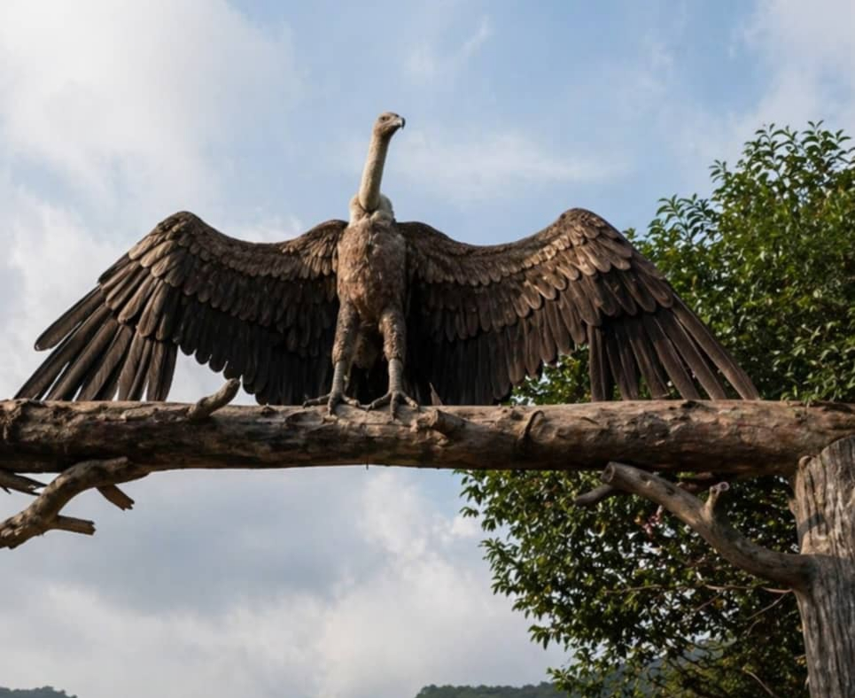
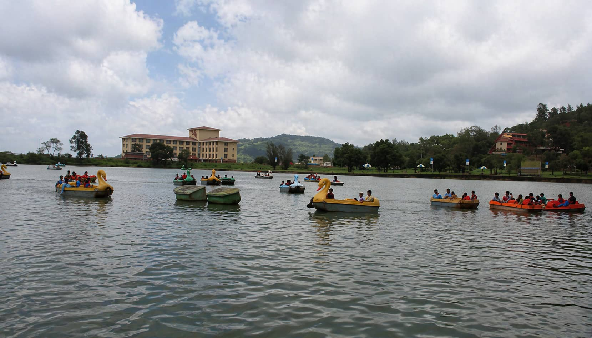
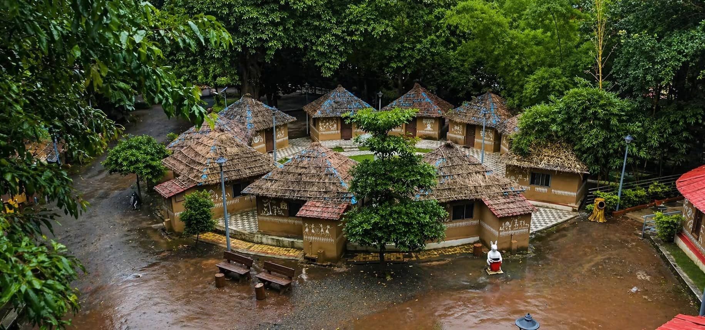
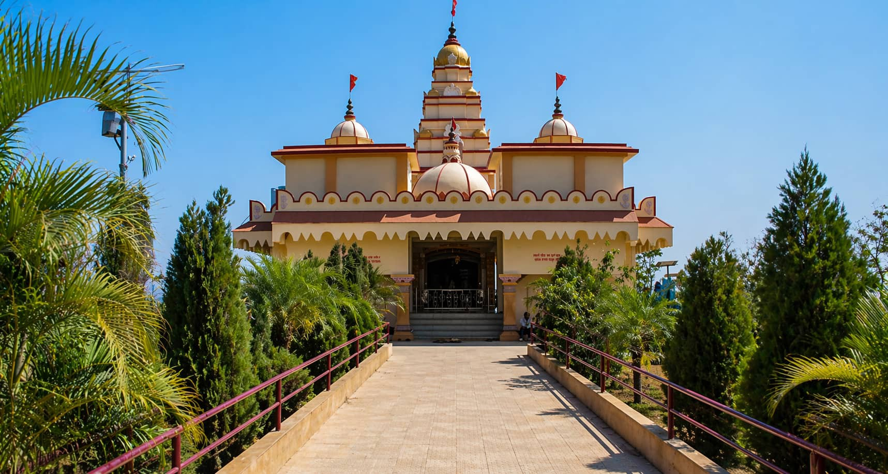
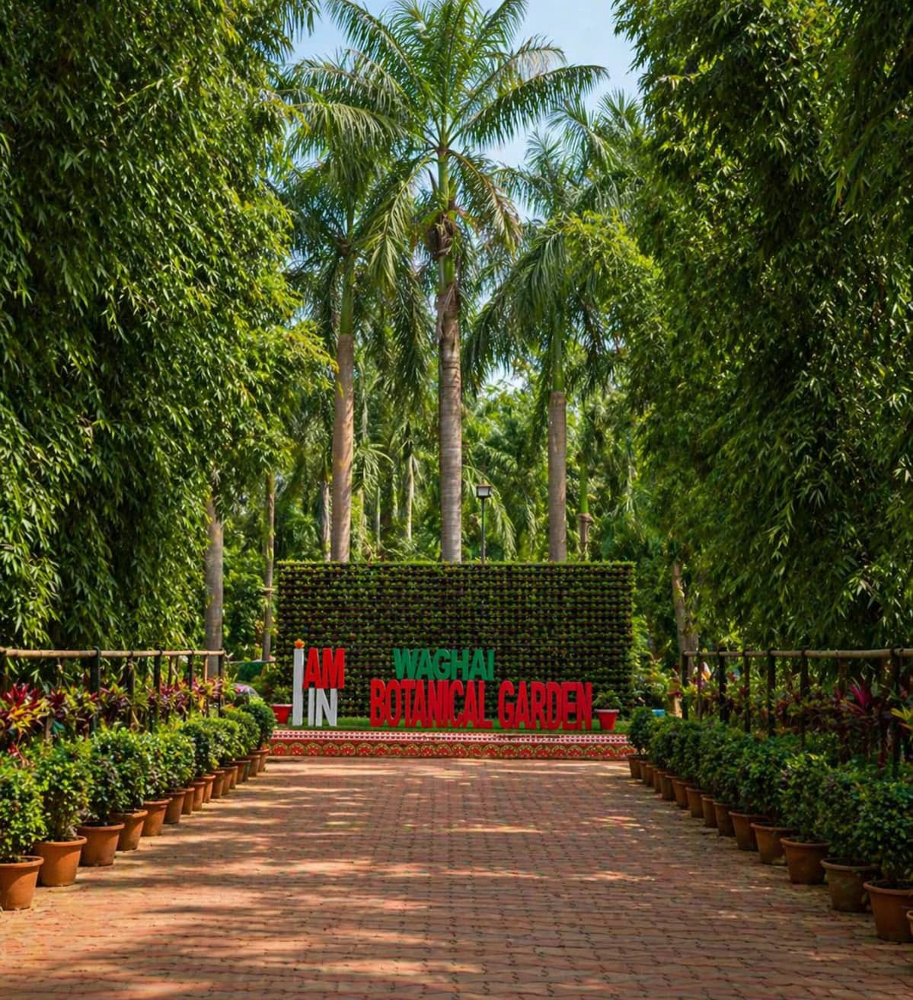
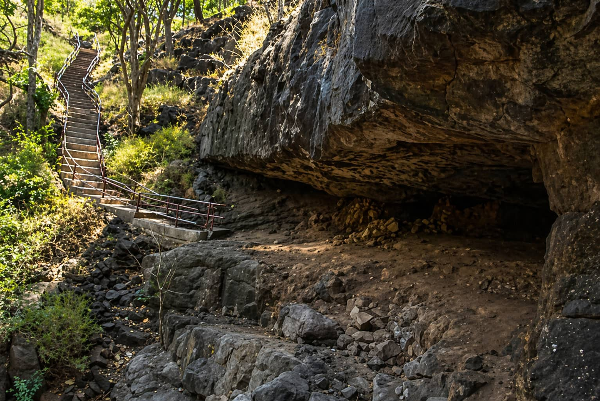
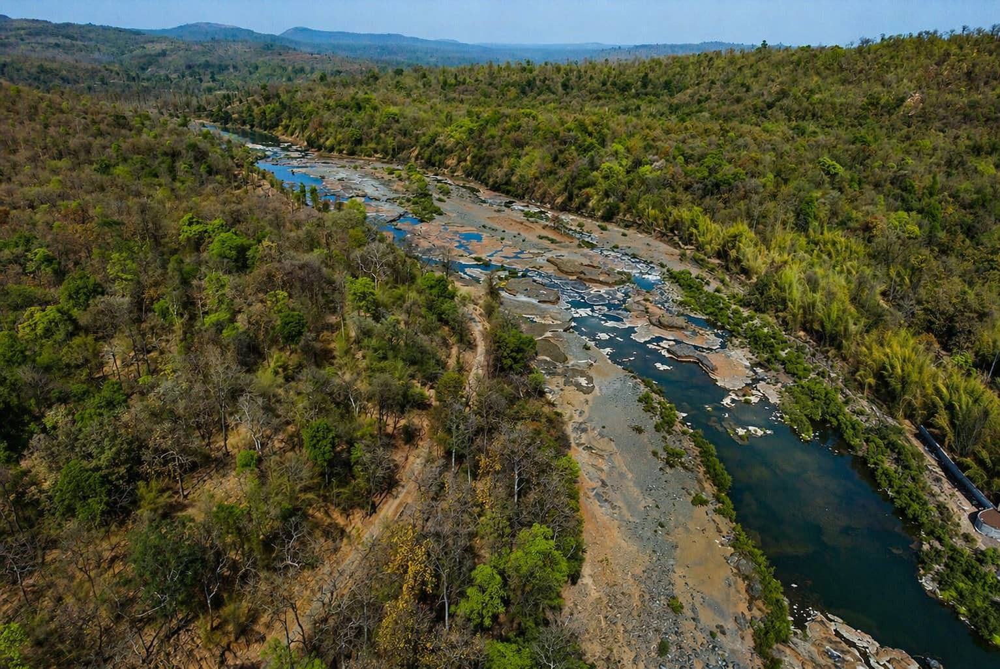
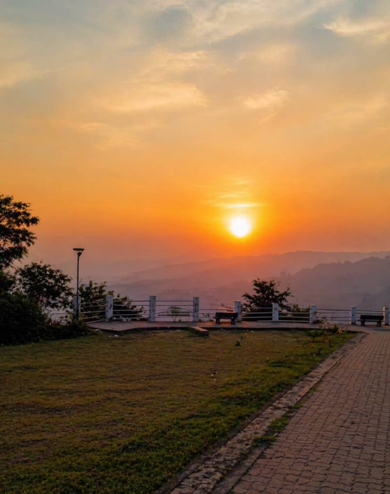

Tourism

Don Hill Station
- 📍 સ્થાન: ડોન હિલ સ્ટેશન, ડાંગ, ગુજરાત
- ⛰️ ઊંચાઈ: આશરે 1000 મીટર
- 🌄 શ્રેષ્ઠ સમય: મોન્સૂન અને શિયાળો
- 🌿 આસપાસ: જંગલ, પહાડ અને વાદળો
- 📸 ફોટોગ્રાફી અને કુદરત પ્રેમીઓ માટે ઉત્તમ
- 🌫️ ખાસ: ધુમ્મસ અને સુંદર દૃશ્યો
- 🚗 રસ્તો: ઉપલબ્ધ (થોડો પહાડી માર્ગ)

Saputara Boating
- 📍 સ્થાન: સાપુતારા સરોવર, ગુજરાત
- 🚣 સમય: સવારે 8 થી સાંજે 6:30
- 🌄 શ્રેષ્ઠ સમય: સાંજ અને શિયાળો
- 🌿 આસપાસ: સરોવર, પહાડ અને બગીચા
- 📸 ફોટોગ્રાફી માટે ઉત્તમ
- 🎟️ બોટિંગ: પેડલ બોટ અને રો બોટ ઉપલબ્ધ

Gira Waterfall
- 📍 સ્થાન: ગીરા ધોધ, ડાંગ, ગુજરાત
- 💧 ઊંચાઈ: આશરે 30 મીટર
- 🌄 શ્રેષ્ઠ સમય: મોન્સૂન (જૂન – સપ્ટેમ્બર)
- 🌿 આસપાસ: નદી, જંગલ અને પથ્થરો
- 📸 ફોટોગ્રાફી અને કુદરત પ્રેમીઓ માટે ઉત્તમ
- 🌊 પાણીનો પ્રવાહ: મોન્સૂનમાં ખૂબ જ તેજ
- ⚠️ સુરક્ષા: ભારે પ્રવાહ સમયે અંતર રાખવું

Mahal Eco Tourism Campsite
- 📍 સ્થાન: મહલ ઇકો ટુરિઝમ કેમ્પ સાઇટ, ડાંગ, ગુજરાત
- 🏕️ પ્રકાર: ઇકો ટુરિઝમ કેમ્પ સાઇટ
- 🌄 શ્રેષ્ઠ સમય: શિયાળો અને મોન્સૂન
- 🌿 આસપાસ: જંગલ, નદી અને કુદરતી વાતાવરણ
- 📸 ફોટોગ્રાફી અને આરામ માટે ઉત્તમ
- 🔥 પ્રવૃત્તિઓ: કેમ્પિંગ, ટ્રેકિંગ, બોનફાયર
- 🛖 રહેવાની સુવિધા: ટેન્ટ / કોટેજ ઉપલબ્ધ

Sabaridham
- 📍 સ્થાન: શબરીધામ, ડાંગ, ગુજરાત
- 🛕 પ્રકાર: ધાર્મિક / આધ્યાત્મિક સ્થળ
- 🕒 સમય: સવારે 6 થી સાંજે 8
- 🌄 શ્રેષ્ઠ સમય: શિયાળો અને તહેવારના દિવસો
- 🌿 આસપાસ: જંગલ, પહાડ અને શાંતિપૂર્ણ વાતાવરણ
- 📸 ભક્તિ અને ફોટોગ્રાફી માટે ઉત્તમ
- 🙏 મહત્વ: શબરી અને ભગવાન રામ સાથે જોડાયેલું

Waghai Botanical Garden
- 📍 સ્થાન: વઘઈ બોટેનિકલ ગાર્ડન, ડાંગ, ગુજરાત
- 🌿 પ્રકાર: બોટેનિકલ ગાર્ડન
- 🕒 સમય: સવારે 8 થી સાંજે 6
- 🌄 શ્રેષ્ઠ સમય: શિયાળો અને મોન્સૂન
- 🌳 આસપાસ: દુર્લભ છોડ, વૃક્ષો અને હરિયાળી
- 📸 ફોટોગ્રાફી અને કુદરત પ્રેમીઓ માટે ઉત્તમ
- 🚶 પ્રવૃત્તિ: વોકિંગ, આરામ અને નેચર સ્ટડી

Pandava Caves
- 📍 સ્થાન: પાંડવ ગુફા, સાપુતારા, ગુજરાત
- 🏞️ પ્રકાર: પ્રાચીન કુદરતી ગુફાઓ
- 🌄 શ્રેષ્ઠ સમય: સવારે અને સાંજે
- 🌿 આસપાસ: પહાડ, જંગલ અને પથ્થર વિસ્તાર
- 📸 ફોટોગ્રાફી અને ઇતિહાસ પ્રેમીઓ માટે ઉત્તમ
- 🧗 પહોંચ: થોડું ચાલવું / સીડીઓ ચઢવી પડે
- 🕉️ માન્યતા: મહાભારતના પાંડવો સાથે જોડાયેલી

Purna Wildlife Sanctuary
- 📍 સ્થાન: પૂર્ણા વન્ય અભ્યારણ, ડાંગ, ગુજરાત
- 🐾 પ્રકાર: વન્ય અભ્યારણ
- 🕒 સમય: સવારે 6 થી સાંજે 6
- 🌄 શ્રેષ્ઠ સમય: શિયાળો અને વહેલો ઉનાળો
- 🌿 આસપાસ: ઘન જંગલ, નદી અને પહાડ
- 📸 wildlife અને કુદરત પ્રેમીઓ માટે ઉત્તમ
- 🦌 પ્રાણી: હરણ, ચિત્તા, પક્ષીઓ અને અન્ય પ્રજાતિઓ

આહવા સનસેટ પોઇન્ટ
આહવા સનસેટ પોઇન્ટ ડાંગ જિલ્લામાં આવેલું એક સુંદર સ્થળ છે, જ્યાંથી લીલાછમ પહાડો અને ખીણો સાથે અદ્ભુત સૂર્યાસ્તના નજારા જોવા મળે છે.
- 📍 સ્થાન: આહવા સનસેટ પોઇન્ટ, ડાંગ, ગુજરાત
- 🌄 Type: Sunset View Point
- 🕒 Timing: Evening 5:30 PM – 7:00 PM
- 🌄 Best Time: Sunset Time
- 🌿 Surroundings: Hills, Forest, Valley
- 📸 Perfect for Photography & Nature Lovers
- 🚗 Access: Easy Road Connectivity